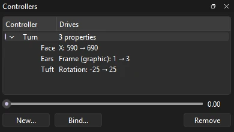
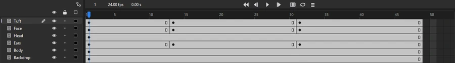

Tutorials
A head turn on a controller
Turn a cat's head with one slider: a master controller slides its face, swaps its ears' drawing and tips its tuft, then keys each pose for you.
This page is also a lesson inside Phoenix: choose and start A head turn on a controller, and Phoenix points at each control as you go. It takes about 8 minutes.
To follow along here instead, download the starting document, head-turn.fla, and open it with .
When a head turns, many parts move at once: the face slides across, the ears shift, the fur on top tips over. A master controller is one slider that moves them all together, so you pose the turn in one drag instead of part by part.
Pip is built from symbols on separate layers. Tuft is the curl of fur on top, Face the eyes, nose and mouth, Head the round head and Ears a graphic symbol with three drawings of the ears: turned left on frame 1, facing you on frame 2 and turned right on frame 3.
1. Open the Controllers panel
Choose .
2. Make a controller
In the Controllers panel, click New.... Type Turn as its name and click OK. It shows in the list, driving nothing yet.
3. Bind the face
In the timeline, click frame 1 of the Face layer: the controller drives the layer picked there. Then click Bind... in the Controllers panel.
Leave Property at X. At 0 and At 1 both show 640, where the face is now. Set At 0 to 590 and At 1 to 690, and click OK: the face slides 50 pixels to the left with the slider at 0, and 50 to the right at 1.
4. Bind the ears
Click frame 1 of the Ears layer, then Bind....
Set Property to Frame (graphic): which drawing of Ears shows. Set At 0 to 1 (turned left) and At 1 to 3 (turned right), and click OK. In the middle of the slider, the ears show frame 2, facing you.
5. Bind the tuft
Click frame 1 of the Tuft layer, then Bind....
Set Property to Rotation, At 0 to -25 and At 1 to 25, and click OK. The tuft turns about its root, so it tips the way Pip looks.

6. Try it
Under the list, drag the slider slowly from one end to the other. Pip looks left, then right: the face slides, the ears change drawing and the tuft tips over, all from one slider.
Leave it in the middle, at about 0.50, so Pip looks straight at you on frame 1.
7. Look right
Click frame 13 of the Face layer to go there. Drag the slider all the way to the right, to 1.00.
The Tuft, Face and Ears layers each get a keyframe on frame 13 holding the pose: the controller keys every layer it drives on the frame shown.
8. Look left
Click frame 31 of the Face layer, and drag the slider all the way to the left, to 0.00.

9. Play it
Press Enter, or click the play button in the timeline header. Pip looks at you, glances right, then left.
What you did
You rigged a head turn on one slider and keyed three poses with it. Each drag is one step, so takes a pose back. What is saved is ordinary keyframes, which play anywhere the file opens; the controller itself is kept with the document for the next time you open it in Phoenix.
A controller can drive X, Y, rotation, scale, alpha or a graphic's frame on any number of layers, and layers inside a symbol too: edit the symbol, then pick its layers when you bind. To change a binding, select it in the list and click Remove, then bind it again.
Here Pip snaps from one pose to the next. For a smoother turn, key more poses a frame or two apart with the slider part way, such as 0.75 on frame 11 before 1.00 on frame 13.
For everything this tutorial touches on, see Master controllers and Symbols.